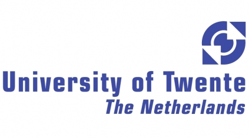

Education
 Ph.D., Industrial and Systems Engineering - Binghamton University, 2015/16 Expected
Ph.D., Industrial and Systems Engineering - Binghamton University, 2015/16 Expected
M.Sc., Industrial Engineering and Management - University of Twente, 2010
B.Sc., Industrial Engineering - Mekelle University, 2006
Selected Graduate Level Courses
edX and Coursera Courses
- - Practical Machine Learning
- - Introduction to Computer Science and Programming Using Python
- - Introduction to R Programming
- - Data Science and Machine Learning Essentials
- - Querying with Transact-SQL
Binghamton University
- - Multivariate Data Analysis
- - Applied Soft Computing
- - Fuzzy Sets, Fuzzy Logic, and Fuzzy Systems
- - Industrial & Systems Engineering in Healthcare
- - Advanced Issues in Quality
- - Modeling and Simulation
- - Advance Topics in Manufacturing
- - Processes for Electronics Manufacturing
- - Reliability
University of Twente
- - Statistics and Probability
- - Empirical Research and Data Analysis
- - Operation Research Methods
- - Optimization of Healthcare Processes 2
- - Discrete Optimization of Business Processes
- - Supply Chain and Transportation Management
- - Purchasing Management
- - Advance Production Planning
- - Forecasting and Inventory Management
- - Management and Organization of Technological Innovations
- - Manufacturing Facility Design
- - Management of Technology